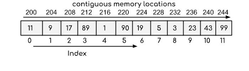

An array is defined as a fixed-size collection of elements of the same
data type stored in contiguous memory locations. It is the simplest data
structure where each element of the array can be accessed by using its
index.
Properties of arrays
Each element of the array is of the same data type and same size.
For example:
For an array of integers with the int data type, each element of the
array will occupy 4 bytes.
Elements of the array are stored in contiguous memory locations.
For example :
200 is the starting address (base address) assigned to the first element
of the array and each element of the array is of integer data type
occupying 4 bytes in memory.

Accessing array elements
The elements of the array are accessed by using their index. The index
of an array of size N ranges from 0 to N-1.
For example:
Accessing element at index 5: Array[5] -> this is the 6th element in the
array.
Every array is identified by its base address i.e the location of the
first element of the array in memory. So, basically, the base address
helps in identifying the address of all the elements of the array.
Since the elements of an array are stored in contiguous memory
locations, the address of any element can be accessed from the base
address itself.
For example :
200 is the base address of the array, so address of element at index 4
will be 200 + 4 * (sizeof(int)) = 216.
Where can arrays be used?
Arrays should be used where the number of elements to be stored is
already known.
Arrays are commonly used in computer programs to organize data so that
a related set of values can be easily sorted or searched.
Generally, when we require very fast access times, we usually prefer
arrays since they provide O(1) access times.
Arrays work well when we have to organize data in multidimensional
format. We can declare arrays of as many dimensions as we want.
If the index of the element to be modified is known beforehand, it can
be efficiently modified using arrays due to quick access time and
mutability.
Disadvantages of arrays
Since arrays are fixed-size data structures you cannot dynamically
alter their sizes. It creates a problem when the number of elements
the array is going to store is not known beforehand.
Insertion and Deletion in arrays are difficult and costly since the
elements are stored in contiguous memory locations, hence, we need to
shift the elements to create/delete space for elements.
If more memory is allocated than required, it leads to the wastage of
memory space and less allocation of memory also leads to a problem.
Time Complexity of various operations
Accessing elements: Since elements in an array are stored at
contiguous memory locations, they can be accessed very efficiently
(random access) in O(1) time using indices.
Inserting elements: Insertion of elements at the end of the
array (at the index located to the right of the last element and there
is still available space) takes O(1) time.
Insertion of elements at the beginning or at any index of the array
involves moving elements to the right if there is available space.
If we want to insert an element at index i, all the elements starting
from index i need to be shifted to the right by one position. Thus,
the time complexity for inserting an element at index i is O(N - i).
Inserting an element at the beginning of the array involves moving all
elements by one position to their right, if there is available space,
and takes O(N) time.
Finding elements: Finding an element in an array takes O(N)
time in the worst case, where N is the size of the array, as you may
need to traverse the entire array.
Deleting elements: Deletion of elements from the end of the
array takes O(1) time.
Deleting elements from the beginning or at any index of the array
involves moving elements to the left.
If we want to delete an element at index i, all the elements starting
from index (i + 1) need to be shifted to the left by one index. Thus,
the time complexity for deleting an element at index i is O(N - i).
Deleting an element from the beginning involves moving all elements
starting from index 1 to left by one position, and takes O(N) time.
Kadane's Algorithm
Problem Statement
Given an array of N integers a1,a2,a3,....., aN find the maximum
subarray(non-empty) sum of the given array.
NOTE: An array B is a subarray of an array A if B can be obtained
from A by deleting several (possibly, zero, or all) elements from the
beginning and several (possibly, zero or all) elements from the end. In
particular, an array is a subarray of itself.
For example:
A[] = [-1, 2, -2, 5, 7, -3, 1]
Maximum subarray sum -> 12 Subarray(0-Based indexed) from index 1 to 4
-> [2, -2, 5, 7] and subarray(0-Based indexed) from index 3 to 4 -> [5,
7] have sum 12.
Kadane’s Algorithm
The idea of Kadane’s algorithm is to maintain a maximum subarray sum
ending at every index ‘i’ of the given array and update the maximum sum
obtained by comparing it with the maximum sum of the subarray ending at
every index ‘i’.
At any given index ‘i’ of the array, we can either:
Append the element at index ‘i’ to the maximum sum subarray(so just
add the element at index ‘i’ to the maximum you’ve found so far).
Start a new subarray starting from index ‘i’.
Appending an element at index ‘i’ to the maximum sum subarray obtained
so far is beneficial if the sum till index ‘i-1’ is non-negative,
otherwise it is better to start a new subarray starting from index ‘i’
and update the maximum sum obtained accordingly.
For Example: Consider the given array A[] = [1, -2, -3, 4, -1, 2,
1]. Element denotes the current element at index ‘i’, MaxSum is the
maximum sum obtained so far till index ‘i’, Sum denotes the current sum
obtained.
Pseudocode:
Time complexity: O(N), where N is the number of elements in the
array, as we traverse the array once to get the maximum subarray sum.
Space complexity: O(1), as no extra space is required.
Dutch National Flag Algorithm
Problem Statement
Given an array consisting of only 0s, 1s and 2s, sort the array.
Naive Approach:
Simply sort the array with the help of sorting algorithms like Merge
Sort, Quick Sort. This gives a time complexity of O(N*logN), where N is
the number of elements in the array.
Two-Pass Algorithm:
The solution involves iterating through the original array and counting
the number of 0s, 1s, and 2s, and just overwriting the original array in
a second pass. The only disadvantage is that we need to traverse the
array twice to get a sorted array.
Steps:
Traverse the array once and keep track of the count of 0s, 1s and 2s
encountered.
Now traverse the array again and overwrite the array starting from the
beginning, first with 0s, then 1s, and finally all 2s.
Pseudocode:
Time complexity: O(N), where N is the number of elements in the
array, as we traverse the array twice only.
Space complexity: O(1), as no extra space is required.
Dutch National Flag algorithm or Three-way partitioning
The Dutch National Flag algorithm or three-way partitioning algorithm
allows sorting the array consisting of 0s, 1s, and 2s in a single
traversal only and in constant space.
Steps:
Maintain three indices low = 0, mid = 0, and high = N-1, where N is
the number of elements in the array.
The range from 0 to low denotes the range containing 0s.
The range from low to mid denotes the range containing 1s.
The range from mid to high denotes the range containing any of 0s,
1s, or 2s.
The range from high to N-1 denotes the range containing 2s.
The mid pointer denotes the current element, traverses the array while
mid<=high i.e we have exhausted the search space for the range which
can contain any of 0s, 1s, or 2s.
If A[mid] == 0, swap A[mid] and A[low] and increment low and mid
pointers by 1.
If A[mid] == 1, increment the mid pointer by 1.
If A[mid] == 2, swap A[high] and A[mid] and increment mid by 1 and
decrement high by 1.
The resulting array will be a sorted array containing 0s, 1s, and 2s.
Pseudocode:
Time complexity: O(N), where N is the number of elements in the array, as we sort the array in a single traversal only.
Space complexity: O(1), as no extra space is required.
Searching and Sorting
Searching
Searching means to find out whether a particular element is present in the given array/list. For instance, when you visit a simple google page and type anything that you want to know/ask about, basically you are searching that topic in google’s huge database for which google is using some technique in order to provide the desired result to you.
There are basically two types of searching techniques:
Linear search
Binary search
Linear Search
It is a simple sequential search over all the elements of the array, and each element is checked for a match, if a match is found return the element otherwise the search continues until we reach the end of the array.
Pseudocode:
Time complexity: O(N), as we traverse the array only once to check for a match for the target element.
Space complexity: O(1), as no extra space is required.
Binary Search
Search in a sorted array by repeatedly dividing the array into two halves and searching in one of the halves.
Suppose you want to find a particular element in the sorted array, then following this technique, you have to traverse all the array elements for searching one element but guess if you only have to search at most half of the array indices for performing the same operation. This can be achieved through binary search.
Now, let's look at what binary searching is.
Let us consider the array: 0 1 2 3 4
1 2 3 4 5
Given an array of size 5 with elements inside the boxes and indices above them. Our target element is 2.
Steps:
Find the middle index of the array.
Now, we will compare the middle element with the target element. In case they are equal then we will simply return the middle index.
In case they are not equal, then we will check if the target element is less than or greater than the middle element.
In case, the target element is less than the middle element, it means that the target element, if present in the given array, will be on the left side of the middle element as the array is sorted.
Otherwise, the target element will be on the right side of the middle element.
This helps us discard half of the length of the array each time and we reduce our search space to half of the current search space.
In the example above, the middle element is 3 at index 2, and the target element is 2 which is greater than the middle element, so we will move towards the left part. Now marking start = 0, and end = n/2-1 = 1, now middle = (start + end)/2 = 0. Now comparing the 0-th index element with 2, we find that 2 > 1, hence we will be moving towards the right. Updating the start = 1 and end = 1, middle becomes 1, comparing the 1-st index of the array with the target element, we find they are equal, meaning from here we will simply return 1 (the index of the element).
Advantages of Binary search:
This searching technique is fast and easier to implement.
Requires no extra space.
Reduces time complexity of the program to a greater extent i.e O(logN), where N is the number of the elements in the array, provided the given array is already sorted.
Pseudocode:
Time complexity: O(logN), where N is the number of elements in the array, given the array is sorted. Since we search for the target element is one of the halves every time, reducing our search space to half of the current search space.
Since we go on searching for the target until our search space reduces to 1, so
Iteration 1- Initial search space: N
Iteration 2 - Search space: N/2
Iteration 3 - Search space: N/4
Let after ‘k’ iterations search space reduces to 1
So, N/(2k) = 1 => N = 2k
Taking Log2 on both sides: => k = log2N
Hence, the maximum number of iterations ‘k’ comes out to be log2N.
Space complexity: O(1), as no extra space is required.
Sorting
Sorting means an arrangement of elements in an ordered sequence either in increasing(ascending) order or decreasing(descending) order. Sorting is very important and many software and programs use this. The major difference is the amount of space and time they consume while being performed in the program.
Prefix and Suffix Sum
Prefix Sum:
Given an array, ‘A’ of size N, its prefix sum array is an array of the same size N such that the ith element of the prefix sum array ‘Prefix’ is the sum of all elements of the given array till ith index from the beginning, i.e Prefix[i] = A[0] + A[1] + A[2] + … + A[i].
For Example: Given A[] = [3, 4, -1, 2, 5], the prefix sum array P[] is given as -
P[0] = 3, P[1] = 7, P[2] = 6, P[3] = 8, P[4] = 13
i.e. P[] = [3, 7, 6, 8, 13]
Applications:
Useful for answering efficiently range sum/xor queries, provided the array elements do not change over which the prefix sum/xor array is calculated.
Product of elements in a given range.
Useful for calculating maximum sum subarray and many more...
Suffix Sum:
Given an array ‘A’ of size N, its suffix sum array is an array of the same size N such that the ith element of the suffix sum array ‘Suffix’ is the sum of all elements of the given array till ith index from the end, i.e Suffix[i] = A[i] + A[i+1] + A[i+2] + … + A[N-1] - (0-Based indexing).
For Example: Given A[] = [3, 4, -1, 2, 5], the suffix sum array S[] is given as -
S[0] = 13, S[1] = 10, S[2] = 6, S[3] = 7, S[5] = 5.
i.e. S[] = [13, 10, 6, 7, 5]
Suffix sum array can serve the same applications as prefix sum array, as it works in a similar manner to prefix sum array.